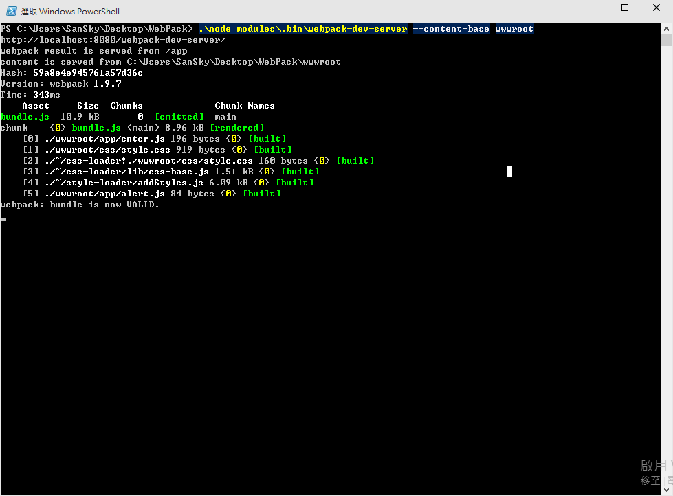
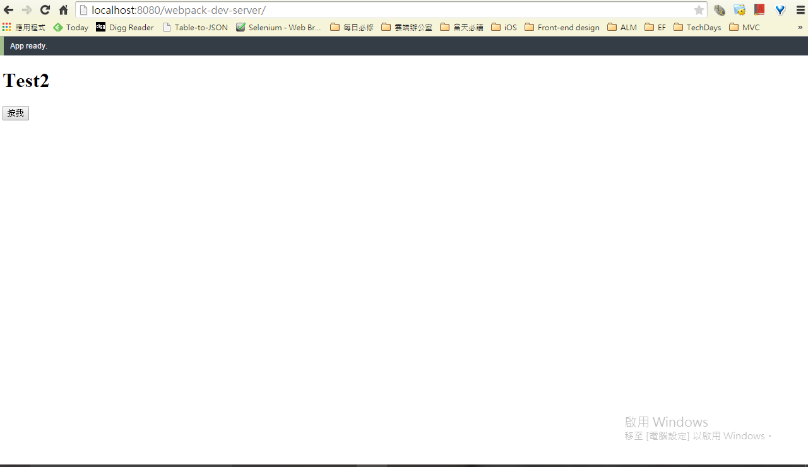
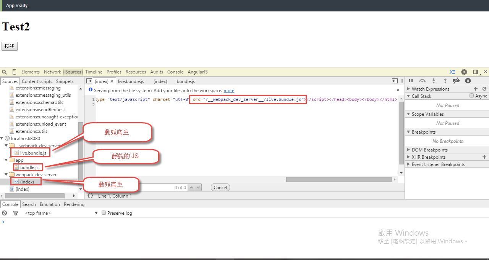
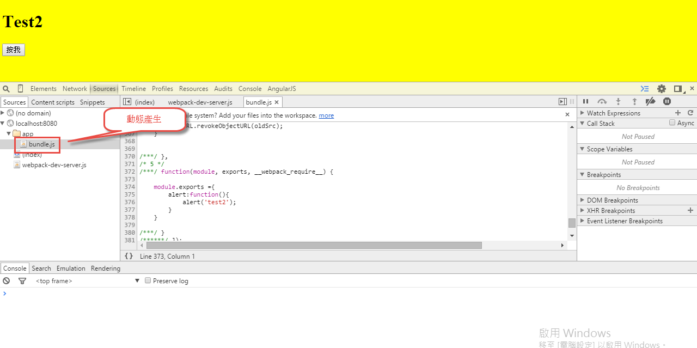

webpack 與 Live Loading
前面介紹了許多基本的操作，也使用了 watch 來監控檔案的變化，但，人懶是沒有極限的，雖然它會自動幫我們重新綁定，但每次還要按一下瀏覽器的重整，還是粉麻煩阿!!!，所以這一篇，來介紹一下 webpack-dev-server。
webpack-dev-server
webpack-dev-server 是一個非常小的 Node.js Express server，他使用了 webpack-dev-middleware 來服務 webpack 的綑綁功能，而 webpack-dev-server 背後使用了 socket.IO ，所以當發生事件的時候，Server 會去通知 Client 端坐一些事情；至於甚麼事情，當然就是自動地將瀏覽器重整了~~
簡單的說，就是當改了檔案，發生重新綑綁事件，並且完成綑綁動作後，就會通知瀏覽器，執行重整瀏覽器的功能，這樣子，開發人員就完全不用按下重整按鈕，打完程式碼，馬上就可以看畫面結果，達到懶人的極致!!但要注意，使用 webpack-dev-server 是用於開發階段，他產生出的 bundel.js 是放在 memory 裡面的，所以要上正式環境，還是要執行一下 webpack ，基本上 webpack-dev-server 是用於測試環境的，不是拿來用於編譯的喔!
而要使用 webpack-dev-server 之前，當然還是先使用 npm 裝一下吧~~ 同樣的，要裝在global 或是專案底下，就看大家覺得哪一個比較好用，小弟這邊還是先以裝在專案底下為範例說明。
1 | npm install webpack-dev-server -g |
1 | npm install webpack-dev-server -D |
執行 webpack-dev-server
安裝完成後，我們就可以簡單執行一下，如下指令， –content-base 代表的是 Web Server 運行起來的根目錄，應該會在哪個資料夾下，所以我們這邊設定，根目錄為 wwwroot 資料夾。
1 | .\node_modules\.bin\webpack-dev-server --content-base wwwroot |
執行的結果如下，我們可以看到，預設的網址位置為http://localhost:8080/webpack-dev-server

我們就可以使用瀏覽器看一下結果，基本上畫面是出來了，但 js 沒效果!? 找不到 !?

Inline mode
甚麼是 Inline mode ，根據官方的文件指出，當我們監控的 js 等檔案，變動的時候，它會自動的重新編譯，並且將編譯好的檔案，存一份到記憶體中，而網頁 include 進來的 js ，不是去抓實體存放在硬碟的 js 檔案，而是抓取記憶體的 js 檔案，所以這代表的幾件事情，一個是實體的 js 實際上是不會被編譯到的，所以後續要用於正式環境上，還是要執行 webpack 來綑綁；第二件事情，既然他存放在 memory ，那實際上，到底存在 memory 上的 js 檔案，會對應到哪個 url 呢?? 畢竟是在記憶體裡面阿!? 這就帶出了我們上面的那個指令 –content-base ，預設的情況下，webpack-dev-server 會將存在記憶體的 js 對應到我們使用 content-base 的那個目錄下。
所以換言之，為什麼我們剛剛執行的畫面，js 找不到!? 我們回到 index.html 的 script 標籤看一下；是低，因為我們的 script 的 src 指向的是 app/bundle.js。
‘’’html
‘’’
但實際上，他對應的 bundle.js 卻是在 wwwroot 底下…所以這時候，我們就要去調整一下 webpack-config.js ，我們就可以透過 publicPath 來建立虛擬的 url ，所以我們這邊建立的虛擬對外路徑為 /app 。
1 | module.exports = { |
加上去後，重新 run webpack-dev-server ，js 就可以順利運作了。
Live Loading
這時候，如果我們去改了一下 js 的檔案，你會發現 webpack-dev-server 會自動 watch，並且執行編譯，而且編譯完成後，畫面會閃一下，自動的 Live Loading喔!!連重整瀏覽器都不用了，達到了懶人的極致~~
最後，我們可以看到下圖，webpack-dev-server 底下的 index ，就是目前瀏覽器的這頁，而這頁也是動態產生的，如果去看一下這頁的source，可以發現，它其實是去讀取 webpack_dev_server 底下的 live.bundle.js喔。
所以簡單的說，原生的 index.html ，裡面使用了 app/bundle.js，透過 webpack-dev-server 後，它會幫我們產生一個虛擬的目錄 webpack-dev-server ，而會把 index.html 的內容複製一份到 webpack-dev-server 目錄底下，並且置換掉 scrpit 標籤的
src ，也就是 app/bundle.js，改成 webpack_dev_server/live.bundle.js ，而 live.bundle.js 裡面的東西，就是我們上面設定 publicPath 的內容。
所以這代表的是，app/bundle.js 底下的東西，都不會在 webpack-dev-server 進行編譯。
另外，就算我們實際上 app/bundle.js 底下有真實的 js ，但實際上，它抓的 js 還是 webpack_dev_server/live.bundle.js 底下的 js，完全不會和 app/bundle.js 有所衝突。

( 備註 : 官方文件很多東西沒寫得很清楚，以上內容是小弟自行實驗和揣測，如有錯誤，請多包涵 )
另外一種實現 Live Loading
除此之外，官方也提供了另外一種方式實現 Live Loading，我們可以在 index.html 加上這段 script
1 | <script src="http://localhost:8080/webpack-dev-server.js"></script> |
如下；這個時候，我們就可以直接使用 http://localhost:8080 來訪問我們的網頁，一樣也會有 Live Loading 的效果。
1 |
|
結果如下圖，我們可以發現，沒有原本複雜的目錄結構了，但要注意的是，app/bundle.js 依舊是透過 webpack-dev-server 編譯出來的，並不是真實的 bundle.js 。

( 備註 : 官方文件很多東西沒寫得很清楚，以上內容是小弟自行實驗和揣測，如有錯誤，請多包涵 )
最終版的 Live Loading
上面的方式看起來很優，但是要增加一個 script 還是很麻煩，有時候要部屬到正式環境，還是要去做一下調整，所以終極懶人版，大家可以改成如下，我們去修改 webpack.config.js 檔案。
1 | module.exports = { |
其實這也是 React Hot Loader 的作法，簡單的說，就是把原本所需要載入的 js 檔案，也一併綑綁起來，這樣子，就可以不用管 script 了。
基本上，到這邊，Live Loding 的架構就完成了。
當然，我們一樣可以把 webpack-dev-server 的指令塞到 package.json 裡面，這些都是一樣的。
webpack-dev-server 的幾種應用
最後，針對 webpack-dev-server 底下，我們在介紹一下有幾種配合的可能。
一種可能是直接透過 webpack-dev-server 當作我們的 web server 來進行開發，這種情況最單純，尤其是純粹只開發前端。
但還有另外一種可能，當我們使用 IIS Express 或是其他的 web server 當作我們的開發環境時，畢竟，要使用 webpack-dev-server 這台 web server 一定看不懂 cshtml 或是 aspx 等等後端的東西，那這個時候，就可以採用另外一個方式，將 webpack-dev-server 當作資源伺服器，簡單的說，我們讓 cshtml 裡面的 script 標籤來參考到 webpack-dev-server 所提供的 bundel.js 檔案，但開發完後，要切換成真正的 script 就是了。
最後一種，情況如第二種情形，但我們透過 webpack-dev-server 的 proxy 功能，來映射到 IIS Express 的 ip 位置上，這個部分，後續再進行介紹。
參考資料
- http://www.jianshu.com/p/8adf4c2bfa51
- https://leanpub.com/survivejs_webpack/read
- http://webpack.github.io/docs/
- http://segmentfault.com/a/1190000002551952
- https://github.com/petehunt/webpack-howto
- http://segmentfault.com/a/1190000002552008
- https://medium.com/html-test/webpack-%E7%9A%84%E5%9F%BA%E6%9C%AC%E5%B7%A5%E4%BD%9C%E6%B5%81%E7%A8%8B-585f2bc952b9